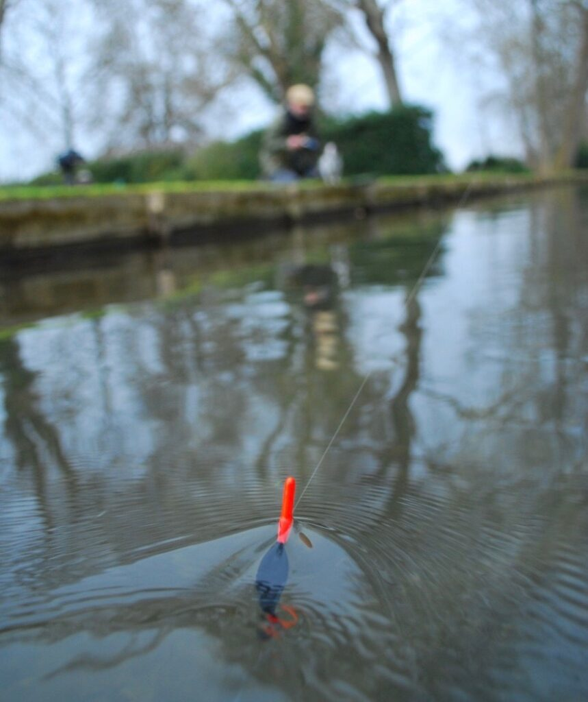

Ψάρεμα με φελλό (Float)

Το ψάρεμα με φελλό είναι τεχνική όπου το δόλωμα κρεμιέται κάτω από έναν φελλό (float), ο οποίος κρατά το αγκίστρι σε συγκεκριμένο βάθος και δείχνει πότε τσιμπάει το ψάρι. Ο φελλός επιπλέει στην επιφάνεια και κάθε βύθισμα, κούνημα ή «σήκωμα» του δείχνει ότι κάτι έχει πειράξει το δόλωμα.
Εξοπλισμός
Χρησιμοποιείται λεπτό, ευαίσθητο καλάμι, μηχανισμός spinning, λεπτή πετονιά και φελλοί κατάλληλου μεγέθους για το βάρος των μολυβιών και του δολώματος. Τα μολύβια (συνήθως split shot) ρυθμίζονται έτσι ώστε ο φελλός να «κάθεται» σωστά στο νερό, με μόνο την κορυφή να φαίνεται, ώστε να είναι ευδιάκριτο και το πιο μικρό τσίμπημα.
Πώς δουλεύει η τεχνική
Ο ψαράς ρυθμίζει το βάθος μετακινώντας τον φελλό πάνω στη γραμμή, ώστε το δόλωμα να βρίσκεται λίγο πάνω από τον βυθό ή σε μεσόνερα, ανάλογα με το είδος που στοχεύει. Στη συνέχεια ρίχνει ήπια το σύνολο (φελλό, μολύβια, δόλωμα) στο σημείο που θέλει και παρακολουθεί συνεχώς τον φελλό: αν βυθιστεί, μετακινηθεί απότομα ή ξαπλώσει στην επιφάνεια, είναι ένδειξη για κάρφωμα.
Πού χρησιμοποιείται
Το ψάρεμα με φελλό εφαρμόζεται σε λιμάνια, μόλους, ήρεμες παραλίες αλλά και σε ποτάμια και λίμνες, όπου χρειάζεται να κρατήσουμε το δόλωμα μακριά από σκαλώματα στον βυθό. Είναι ιδανικό για ψάρια που τρέφονται στη μεσαία ζώνη ή λίγο πάνω από τον βυθό και προσφέρει οπτική, «ζωντανή» επαφή με το τσίμπημα, κάτι που το κάνει ιδιαίτερα διασκεδαστικό για αρχάριους και προχωρημένους.